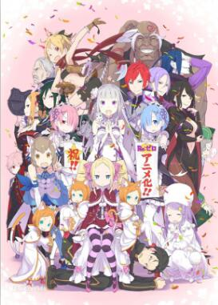

关于我们团队的介绍
嘛，我们团队的人我都联系不上，也没人来找过我，无语啦，发发我比较期待的一个四月新番吧
Re:从零开始的异世界生活

走出便利店要回家的高中生菜月昴突然被召唤到异世界。这莫非就是很流行的异世界召唤!?
可是眼前没有召唤者就算了，还遭遇强盗迅速面临性命危机。这时，一名神秘银发美少女和猫精灵拯救了一筹莫展的他。
以报恩为名义，昴自告奋勇要帮助少女找东西。然而，好不容易才掌握到线索，昴和少女却被不明人士攻击而殒命──本来应该是这样，
但回过神来，昴却发现自己置身在第一次被召唤到这个异世界时的所在位置。「死亡回归」──无力的少年得到的唯一能力，
是死后时间会倒转回到一开始。跨越无数绝望，从死亡的命运中拯救少女！